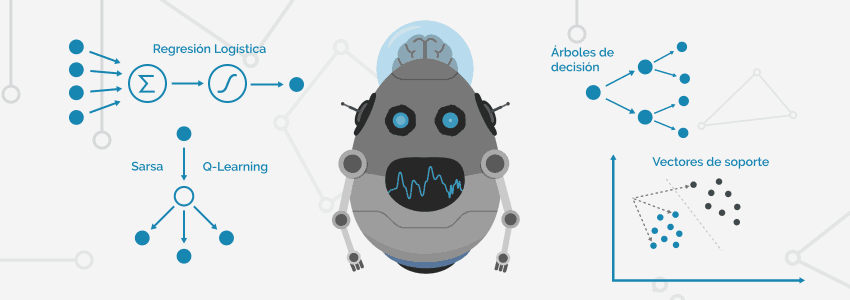

La Inteligencia Artificial es la simulación de inteligencia humana por parte de las máquinas.
Dicho de otro modo, es la disciplina que trata de crear sistemas capaces de aprender y razonar como un ser humano, aprendan de la experiencia, averigüen cómo resolver problemas ante unas condiciones dadas, contrasten información y lleven a cabo tareas lógicas.
El hecho de que un sistema posea hardware humanoide y actúe físicamente como tal es un campo perteneciente a la robótica, y se aleja del concepto de Inteligencia Artificial, que se centra en emular el modo de pensar y razonar de los humanos.
Cabe destacar que, de conseguir que un sistema pudiera aprender y pensar como un humano, poseería notables ventajas sobre éste gracias a su velocidad y capacidad de cálculo.
Son muchas las tecnologías y disciplinas que la Inteligencia Artificial involucra, y que son en sí mismas ramas de estudio matemático e ingenieril. Echemos un vistazo a las más relevantes, comenzando por sistemas de reconocimiento y llegando a sistemas de aprendizaje automático.
El reconocimiento automático del habla es una disciplina perteneciente a la acústica y cuyo objetivo es el reconocimiento de fonemas en una señal de voz. Los sistemas de reconocimiento de voz procesan la señal recogida por un micrófono para identificar las palabras que el usuario pronunció.
Mientras que el reconocimiento del habla se centra en una conversión fiel de la voz a texto, el Procesamiento del lenguaje natural PLN (o NLP, Natural Language Processing, en inglés) es una disciplina que está más ligada al campo de la lingüística, y su objetivo es comprender qué intención tiene el usuario al lanzar un determinado comando, pregunta o afirmación (ya sea escrito o por voz) y qué espera obtener, así como analizar el estado anímico y encontrar patrones subjetivos en éstos. En resumen, es el campo que ayuda a la comunicación (principalmente sonora y escrita) hombre máquina, y viceversa.
El reconocimiento visual es la disciplina basada en el procesado de la señal de imagen o vídeo, con el objetivo de reconocer patrones, formas, y en el mejor de los casos, identificar fielmente los diferentes elementos en una imagen.
El reconocimiento de texto podría considerarse una parte del reconocimiento visual, ya que su principal objetivo es reconocer e identificar texto en formatos de imagen. Resulta común el uso de herramientas de OCR (Optical Character Recognition) para esta labor.
Big Data lo podemos considerar, sin entrar a tecnicismos, un gran volumen de datos. Big Data por sí solo no es una tecnología, pero tener a disposición una cantidad ingente de datos (preferiblemente estructurados) es una base vital en la consecución de objetivos tanto en la analítica de Business Intelligence como en la aplicación de determinados algoritmos de Machine Learning.
Los sistemas expertos son aquellos en los que se ha volcado todo el conocimiento humano posible acerca de una determinada rama. Un ejemplo clásico es el de los sistemas que juegan al ajedrez, que a partir de toda una colección de movimientos y estrategias que se les ha introducido en memoria, son capaces de determinar la mejor jugada (generalmente basándose en árboles de decisión) ante unas condiciones dadas.
La robótica (ya sea mecánica o robótica software, como el RPA) abarca un alto rango de dispositivos. Siempre que un sistema o robot muestre síntomas de inteligencia, por ejemplo, al ser capaz de tomar decisiones por muy básicas que sean éstas, estaremos hablando de Inteligencia Artificial. Recordemos que la IA no tiene por qué ser especialmente sofisticada, existe en todos los niveles, incluso los más básicos, y debe diferenciarse de la capacidad de aprender de las máquinas; es decir, el Machine Learning.
El aprendizaje automático o Machine Learning es la disciplina, dentro de la Inteligencia Artificial, que trata de conseguir que un sistema aprenda y relacione información del modo en que lo haría una persona. Para ello, usa algoritmos que son capaces de detectar patrones en los datos previos, pudiendo crear predicciones futuras, así como nuevas tendencias como el Deep Learning y sus algoritmos de redes neuronales.
El Deep Learning es una subdisciplina del Machine Learning. Es un sistema de aprendizaje que se inspira en el funcionamiento de las redes neuronales del cerebro humano para procesar la información, con una base matemática muy compleja detrás.
Aunque sí se apoya en la experiencia (ya sean datos previos, generados por el entorno o autogenerados), no parte de indicaciones estrictas que determinen qué es correcto y qué no, de forma que el sistema pueda determinar conclusiones por sí sólo.
La Inteligencia Cognitiva es una combinación de las tecnologías mencionadas previamente con el objetivo de crear servicios de Inteligencia Artificial capaces de tener comprensión humana. Es la unión de reconocimiento visual, sonoro, comprensión lectora, NLP y Machine Learning para crear sistemas capaces de comprender la información relacionada a la interacción humana y responder en consecuencia. Empresas como Microsoft ponen a disposición de sus clientes Servicios Cognitivos para poder extender las capacidades de sus aplicaciones.
No es fácil categorizar la Inteligencia Artificial y lo cierto es que resulta mejor práctica categorizarla en función de los algoritmos que utiliza determinado sistema. Sin embargo, algunos expertos han tratado de crear grupos de inteligencia artificial en base al su enfoque.
Según los científicos informáticos Stuart Russell y Peter Norvig, la inteligencia artificial puede dividirse en las siguientes categorías:
Estos sistemas tratan de emular el pensamiento humano de una forma bastante literal mediante modelos de redes neuronales artificiales.
Estos sistemas se centran en actuar como humanos; están más ligados a la robótica clásica y resultan menos flexibles.
estos sistemas tratan de aplicar lógica humana a la hora de percibir, razonar y actuar. No están centrados en emular el comportamiento neuronal del cerebro sino que son entrenados para actuar de forma humana en un entorno determinado. Ejemplo de ello son los agentes expertos.
Tratan de emular de forma racional el comportamiento humano, obteniendo conclusiones propias a condiciones del entorno dadas. El punto diferencial en estos sistemas es el de intentar que apliquen racionalidad a sus decisiones.
La Inteligencia Artificial se encuentra en cada rincón del mundo moderno, eso sí, no siempre la encontramos en forma de lujosos asistentes virtuales capaces de reconocer nuestra voz. Veamos algunos ejemplos, desde los más sencillos a los más complejos:
Desde termostatos inteligentes hasta aspiradoras que pasean por todos los rincones de nuestra casa. La domótica es uno de los campos “sencillos” de la Inteligencia Artificial que los usuarios hemos podido disfrutar desde hace muchos años.
No es una de las IA más llamativas, pero empresas como Google o Microsoft aplican multitud de algoritmos en constante evolución con el objetivo de detectar correos fraudulentos y de tipo SPAM.
Suelen ser sistemas muy entrenados en una actividad intelectual específica, partiendo de los conocimientos de los expertos en la materia. Un ejemplo clásico es el de los sistemas que juegan al ajedrez.
Sistemas que realizan un interesante uso del NLP (Natural Language Processing) y mejoran con cada experiencia; permiten una comunicación bidireccional coherente con seres humanos, ya sea oral o escrita.
Quizá uno de los más obvios, y que por ello muchas veces queda en el olvido, pero siempre ha sido una de las principales fuentes de mejora de la IA, en esa eterna búsqueda por conseguir que “la máquina” actúe de forma coherente y realista en una partida, ya sea un soldado enemigo o un coche de carreras.
Es lo más cercano a una IA de película con la que podemos interactuar hoy en día. Reconoce nuestra voz, se adapta a la forma en que pedimos las cosas, y es capaz de recomendarnos entretenimiento acorde a nuestros gustos. Uno de los fuertes de estas tecnologías es que cuentan con un inmenso número de usuarios que los alimentan de forma constante y ayudan a reforzar sus algoritmos de aprendizaje.
[ 1 ] Alain Chas , Qué es la Inteligencia Artificial [Online]. Available : https://www.auraportal.com/es/que-es-la-inteligencia-artificial/
[ 2 ] Alain Chas , Tecnologías de Inteligencia Artificial y sus categorías [Online]. Available : https://www.auraportal.com/es/tecnologias-de-inteligencia-artificial-y-sus-categorias/